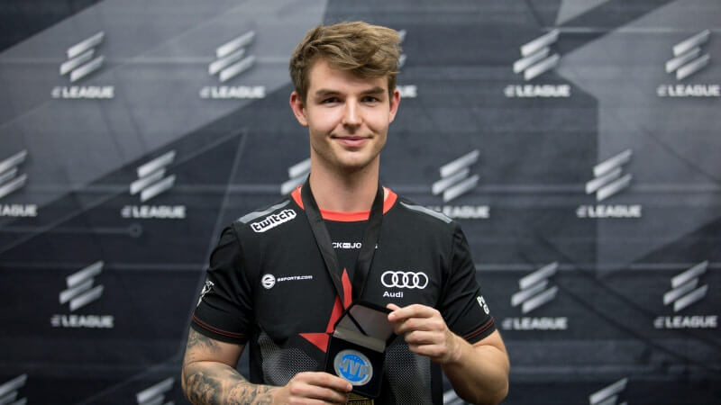

Nicolai "dev1ce" Reedtz (known as device and devve prior to 2016) (born September 8, 1995) is a Danish professional Counter-Strike: Global Offensive and former professional Counter-Strike: Source player who is currently playing for Astralis as the AWPer. He is known as one of the best players of all time, consistently playing at a very high individual level since 2014. During his 5-year tenure with Astralis from January 2016, when the organization was founded by the Team Questionmark players, to April 2021, when he was acquired by NIP, dev1ce won four Majors, earned the MVP award at two of them, and won numerous other tournaments and MVP awards.
